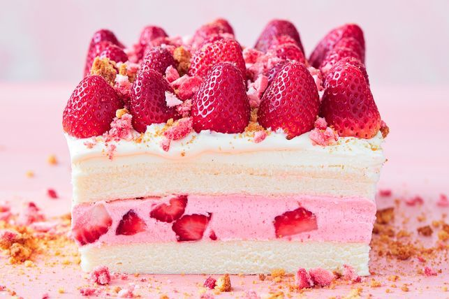

Strawberry Crunch Cake

This impressive no-bake dessert uses strawberry jelly crystals as the secret ingredient to make the shortcut cheesecake filling.
Ingredients:
- 500g fresh strawberries, hulled
- 750g cream cheese, at room temperature, chopped
- 85g packet strawberry jelly crystals
- 450g packet double unfilled slab sponge cakes
- 8 butternut snap biscuits
- Freeze-dried strawberries, crushed, to decorate (optional)
- Finely chop 125g strawberries. Use electric beaters to beat 500g cream cheese in a bowl for 5 minutes or until pale and creamy. Add the jelly crystals. Beat for 2 minutes or until combined and dissolved. Fold through the chopped strawberries.
- How to store, hull, wash and use strawberries, blueberries and raspberries - including a few cheat's techniques and clever hacks…
- Remove the sponge cakes from plastic container. Line container with baking paper, allowing paper to overhang 2 sides. Use a large serrated knife to trim and level top of each cake. Place 1 sponge in prepared container. Spread with the cream cheese mixture to cover. Top with the remaining sponge cake, cut-side down, pressing down to secure. Cover with plastic wrap and place in the fridge for 30 minutes to chill.
- Meanwhile, place biscuits in a small food processor. Pulse until coarsely crushed. Use electric beaters to beat the remaining cream cheese for 5 minutes or until pale and creamy.
- Place cake on a serving plate. Spread remaining cream cheese on top. Decorate with remaining strawberries, cut-side down, biscuit and freeze-dried strawberries, if using.